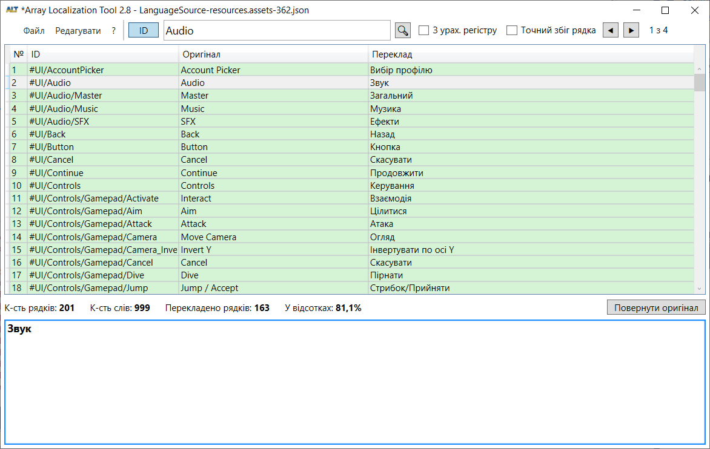
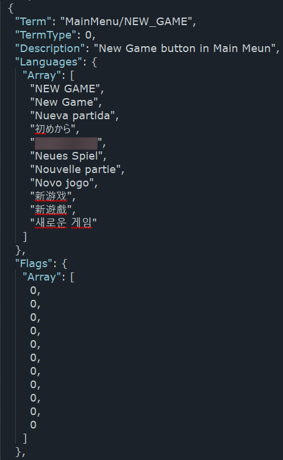

Авторська програма для зручного перекладу та роботи з багатомовними масивами JSON-файлів для Unity.
Написана на C# і працює на Windows 7-11.

- Підтримка п’яти видів масивів.
- Незалежний вибір індексів мов.
- Імпорт перекладу з попередньо збереженого JSON.
- Експорт таблиці у CSV для подальшого перекладу на Google Sheets чи Crowdin.
- Імпорт перекладу з CSV з оновленням лише змінених рядків.
- Відновлення тексту зі стовпця оригіналу — окремо або для всіх рядків одразу.
- Пошук по тексту або лише по ID з переходом між знайденими результатами.
- Індикація змінених/перекладених/імпортованих рядків.
- Статистика кількості рядків, слів, перекладених рядків та відсоток перекладу.
- Підтримка відкриття файлу JSON простим перетягуванням на .exe.
- Гарячі клавіші для швидкої роботи:
—Ctrl + O— відкриття файлу,
—Ctrl + S— збереження файлу,
—Ctrl + F— перехід до пошуку,
—F3— знайти далі,
—Shift + F3— знайти попереднє.
GitHub
Подякувати за програму: monobank
Зворотній зв’язок через Телеграм: Галицький Розбишака